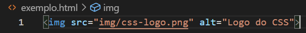
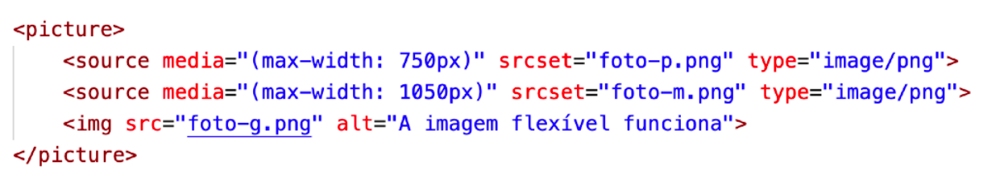
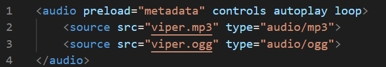
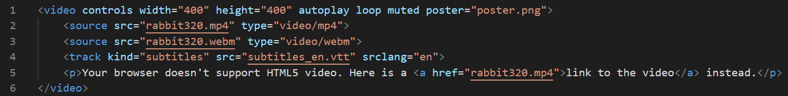

Adicionando Imagem
A tag <img> permite que você adicione uma imagem ao documento. A maioria dos elementos requer tags de abertura e fechamento, mas essa é uma tag que não possui fechamento.
Atributo src é obrigatório, para definir o caminho onde se encontra a imagem.
Atributo alt significa texto alternativo, traz significado às imagens em nossos sites. Se uma imagem não carregar em uma página da web, o texto vai aparecer. Além disso, usuários com deficiência visual geralmente navegam na web com a ajuda de um software de leitura de tela. Quando você inclui o alt, o software de leitura de tela pode ler a descrição da imagem em voz alta para o usuário com deficiência visual.
Atributo title é para descrição, esse texto irá aparecer quando o mouse for passado por cima da imagem.
Para web, os melhores formatos de imagens são JPEG ou PNG, o que vai diferenciar qual formato você deve usar é o que você predente com a imagem. Se quiser uma imagem grande e com alta resolução, escolha o JPEG. Se quiser com fundo transparente, escolha o PNG
Tamanho de Imagem para Site
Vale lembrar que é importante não deixar o tamanho da imagem grande, pois dificulta o carregamento das imagens, pois temos que pensar em todos os dispositivos, e além disso, diferentes velocidades de internet de cada usuário.
Para imagem de fundo, o ideal é no máximo a imagem ter 1500px de largura
Para imagem de conteúdo, o ideal é no máximo ter 650px de largura
Via arquivo no projeto ou URL
Inserindo imagem via arquivo localizado na pasta do projeto

Inserindo imagem via URL

Imagem com legenda
Caso precise adicionar uma legenda abaixo da imagem será preciso adicionar duas novas tags, <figure></figure> engloba toda a estrutura da imagem com a legenda, e a <figcaption></figcaption>, onde será colocado o legenda da foto.

Imagens Responsivas
Perceba que envolvida pela tag picture, o img permanence igual com src e alt
Além disso, note que a tag source possui três atributos:
- type - vai indicar o media type da imagem que usamos.
- srcset - vai configurar o nome da imagem que será carregada quando o tamanho indicado for atingido
- media - indica o tamanho máximo a ser considerado para carregar a imagem indicada no atributo srcset.
É importante que existe uma ordem entre os source, e nessa nossa configuração, os itens mais acima sejam os menores tamanhos para max-width e que os seguintes sejam maiores, de forma crescente. O último item dentro de picture deve ser a imagem padrão.
Favicon
Favicon é um ícone de favorito que fica no inferior do Title do site

A extensão para favicon é a .ico
Para adicionar, no head é preciso colocar o seguinte link:
<head><link rel="shortcut icon" href="favicon.ico" type="image/x-icon"></head>
O atributos para os ícones:
- rel - para descrever o ícone desejado.
- sizes - para resolução do tamanho do ícone.
- href - o caminho do ícone.
Adicionando Áudios
O elemento audio funciona para adicionar audios para seu documento.
O elemento audio não há componente visual; portanto, não há nada para atribuir uma largura ou altura.
O atributo preload indica se o áudio será pré-carregado ou não e aceita três valores:
- metadata - vai carregar apenas as informações sobre o arquivo (tamanho, tempo, informações de direitos, etc)
- none - não vai carregar absolutamente nada até que o usuário clique no botão play ou um script inicie a reprodução
- auto (padrão) - vai carregar o arquivo de áudio inteiro assim
O atributo controls vai apresentar o player na tela. Caso não seja colocado na tag audio, o controle será transparente e o usuário não poderá interagir com ele.
O atributo autoplay, quando inserido, vai iniciar a reprodução do áudio assim que a página for carregada.
O atributo loop vai fazer com que o áudio seja repetido eternamente assim que terminar a sua reprodução
Adicionando Vídeos
Para adicionar vídeos hospedado no nosso servidor, use a tag video
Há vários outros recursos que você pode incluir em um vídeo HTML5. Dê uma olhada no nosso exemplo, abaixo:
Os novos recursos são:
- width and height - Você pode controlar o tamanho do vídeo com esses atributos. Os vídeos mantêm sua proporção largura-altura nativa - conhecida como proporção de tela. Se a proporção não for mantida pelos tamanhos definidos, o vídeo aumentará para preencher o espaço horizontalmente, e o espaço não preenchido receberá apenas uma cor sólida de fundo por padrão.
- muted - Faz com que a mídia seja reproduzida com o som desativado por padrão.
- poster - O URL de uma imagem que será exibida antes da reprodução do vídeo. Destina-se a ser usado para uma tela inicial ou tela de publicidade.
- controls - vai configurar se os controles do vídeo vão aparecer na parte inferior da mídia. Por padrão, os controles não aparecerão, mas basta colocar a palavra na tag.
Que formatos são esses?
As faixas de áudio e vídeo também estão em diferentes formatos, por exemplo:
- Um contêiner WebM geralmente empacota o áudio do Ogg Vorbis com vídeo VP8 / VP9. Isso é suportado principalmente no Firefox e Chrome.
- Um contêiner MP4 geralmente empacota áudio AAC ou MP3 com vídeo H.264. Isso é suportado principalmente no Internet Explorer e Safari.
- O contêiner Ogg mais antigo tende a usar o áudio Ogg Vorbis e o vídeo Ogg Theora. Isso foi suportado principalmente no Firefox e Chrome, mas foi basicamente substituído pelo formato WebM de melhor qualidade.